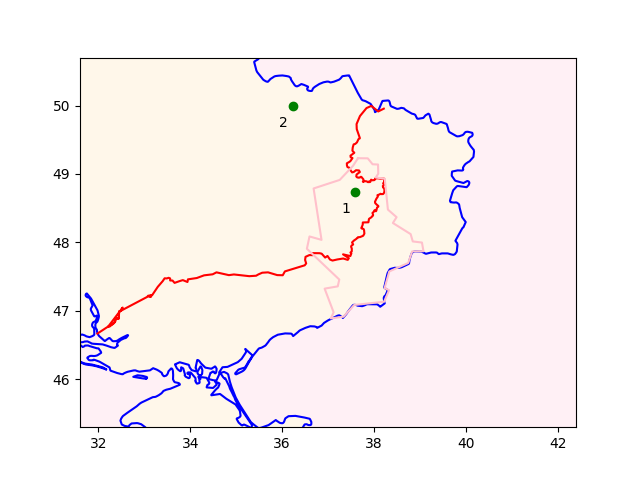

Week 37
"@Nouriel
Fake. Manipulated. Scammed. Crypto modus operandum
'@JohnReedStark A new Forbes analysis of 157 crypto exchanges finds that 51% of the daily bitcoin trading volume being reported is likely bogus. Market manipulation of crypto is not only rampant and tolerated, but also encouraged. Fraud not only rewarded, but also taught'"
Is it an accurate term? South Africa thinks so. Do you know better than them?
Haha they used the hastag #CaptainApartheid
NYT: "Marvel Attracts Criticism With Israeli 'Captain America' Superhero"
CNBC: "'I accept being ordinary': China's youth are turning their backs on hustle culture"
The Guardian: "Extreme hunger soaring in world’s climate hotspots, says Oxfam"
"@stephenwertheim
Because Washington is averse to evaluating the effectiveness of the economic sanctions it proliferates, it is worth noting the record of sanctions so far in the Ukraine war: they failed to deter the invasion and have failed to stop the war"
Another DIY UA/RU war event publisher, claims to have "good maps" with raw data but no delination line between RU and UKR. What the F.
Game-changing tech!? Do tell.
H2 View: "A game-changing technology for heavy-duty vehicles is about to be unveiled in Hannover, during IAA Transportation, from September 19-25. The grand unveiling will be provided by Westport Fuel Systems.. about hydrogen and internal combustion engines"
H2 View: "Siemens, Shell to collaborate on green hydrogen"
H2 View: "Hydrogen trucking could be competitive with diesel by 2030 with policy support, says whitepaper"
F24: "Citizens of Kramatorsk face dilemma of whether to leave.. Despite the Ukrainian army's rapid counter-offensive, Russian forces still occupy vast swathes of Ukraine, including much of Donetsk and Luhansk, the two regions that make up the Donbas. Cities in the Ukrainian-held parts of the Donetsk region suffer regular shelling"
In other words, no moves that will trigger a trade war - for now.
Politico: "UK tells EU it will keep waiving Northern Ireland Brexit checks"
E-fuels are a cop-out; I dont think they can be guaranteed be net-zero clean. Truly clean fuel from get-go is the way.
"Germany’s finance minister.. Christian Lindner is frantically lobbying to keep e-fuels in the mix past 2035"
Some post-apoclypic ice-age scifi movies have most of humanity dying off, freezing their asses off on the surface. Unrealistic bcz there is so much heat below ground.
Earth's core certainly has lots of free energy - heat.
"DoE launches new Energy Earthshot to make geothermal energy cheaper"
"HDF Energy [of France].. has announced that its green hydrogen fuel plant in Namibia – a first in Africa – will start power production in 2024"
Let's get the terms right, inflation fell for August, which is calculated from CPI YoY.
RFERL: "Another Russian Executive Dies In String Of Strange Deaths Of Tycoons.. The top manager at Russia's [KRDV].. Ivan Pechorin, has been found dead after media reports said last weekend that he fell out of a motorboat..
In early September, LUKoil, Russia's largest private oil company and one of the few corporate voices to oppose to the Kremlin's war in Ukraine, said its chairman, Ravil Maganov, had died in Moscow following a "serious illness," while local media reports said the 67-year-old tycoon had plunged to his death from a hospital window.
In May, Russian media reported that a former top manager of LUKoil, Aleksandr Subbotin, was found dead in the basement of a house in the town of Mytishchi near Moscow.
Weeks before that.. a former top manager at Russian gas giant Novatek, Sergei Protosenya, his wife, and daughter had been found dead in a rented villa in the town of Lloret de Mar near Barcelona.
Several other senior Russian businessmen and their families have also been found dead amid unclear circumstances since Russia started its full-scale aggression against Ukraine.
On February 8, KVRD Director General Igor Nosov died at the age of 43. The death was officially announced as caused by a stroke"
"@AcademicChatter
My favorite part of writing is rearranging my house."
Note the policy-fu.. Could we "poll bunch of people" on the street and create equally significant policy? I don't think so.
Hydrogen Europe: "Following the plenary vote on the Renewable Energy Directive II (REDII), Hydrogen Europe wholeheartedly welcomes the historical European Parliament (EP) decision to commit to ambitious binding renewable targets and to simplify the regulatory framework...
Further good news from the parliament today is the return of the additionality principle to legal regulation, rather than delegating this to the European Commission via the Delegated Act of RED II. This will ease the implementation of the additionality principle for renewable hydrogen. MEPs have listened to the sector’s concerns that overly strict regulations would hinder the development of this crucial market. Hydrogen Europe fully recognises the importance, and supports, the principle of additionality but has expressed concerns regarding the practical implementation of the proposed criteria, not the principle itself. The task at hand is to find a balance between ensuring green hydrogen is produced from new renewable energy capacity and avoiding excessive constraints on a nascent market"
They are not jailing, abusing people, they are just like, to other states, "here you take'em". "Want open borders? Now that border extends to your state"
Texas gov sent immigrants by bus, he is now outdone.
Axios: "Ron DeSantis sends two planes of undocumented migrants to Martha’s Vineyard"
The Independent: "Sweden’s first female PM concedes defeat to right-wing, anti-immigrant bloc"
For the py interface had to go to sources, run configure and make.
Do people still know how to do that, or do you go to TikTok and
just dance about it?
Book search desktop UI can collect dust.
Web interface a-ok.. Now serving 20 GB of book content based on 1 GB index; on a tiny Raspberry Pi.. How about that? 🐍
Some good things do happen in UK no doubt
H2 Fuel News: "Current Pipeline of Blue Hydrogen Projects Projected to Exceed 2030 Targets in The UK"
H2 Central: "GOLDI Mobility Kft Unveils its 18-Metre Articulated Fuel Cell Bus, GOLDiON H18"
Two degrees of seperation from the lithium boy e-jagoff
{kind=link}
That's the pedo guy fyi
"@PoliticsJOE_UK
The Duke of York will be a Counsellor of State for the new king"
"@etuc_ces
The European Parliament has voted to adopt the directive on adequate minimum wages and stronger collective bargaining.. This victory for the trade union movement couldn't come at a more important moment - Europe needs a pay rise!"
Deus, wonderful, wonderful scifi movie, starring Claudia Black from Farscape.
A lot of the black cultural artifacts have Southern flavor (ie American), repackaged. The showy parts were created so mainstream could play Dances with Wolves with it. It is hilarious I refer to them but may not be beneficial for its supposed owners.
A black kid born into the culture, same way.. Everyone gets culture, by merely being in it.
That means first, second generation "Irish" doesn't become 100% of what their ancestors were, they assimilate, into a culture that is only 10% of that. They will never be 100% Irish.
Immigrants contribute to culture prop to their size... 10% of United States is of Irish desc, that makes them 10% Irish in culture.
Found python interface to recoll, writing a Flask web based search
utility now
The TR narrative was expanded in the 80s, turning into the abomination it is today, again partly for the benefit of the outer alliance
RU already has all of Luhansk, a portion of Donetsk (the pink lines on the map). They are still advancing in Donetsk, there is shelling all across the east and southern front.
There is also activity in southwest, towards Odessa. From the attack patterns it looks like RU still intends to landlock Ukraine.
Latest frontline
# kramatorsk, kharkiv
geo = [(48.7309677, 37.5836740),(49.992383834083824, 36.23871126844284)]
u.sm_plot_ukr1('ukrdata/alt1-0913.csv',geo)

"'A few weeks like this and the European economy will just go into a full stop,' [Belgian PM] told Bloomberg on Thursday. 'Recovering from that is going to be much more complicated than intervening in gas markets today. The risk of that is de-industrialization and severe risk of fundamental social unrest.'"
The assasination of Diana was probably race-related. Then Meghan Markle events were racism related.. For a country who "abolished slavery early" they sure have a lot of that over there, especially at the top.
There was the talk of a "Kherson annexation referandum" a while back. If it is pursued, and people there vote Ja on the Anschluss, then they automatically become Russian citizens, and massive mobilization to defend them could be in the offing.
I dont think Russia will leave what it considers crucial areas - the land bridge to Crimea, areas in Donbas.
#Davis #RU #UA
The biggest downside of the royalty is they cement certain type of Britain. After Brexit they asked Liz II 'what will happen to us now'? She was like "well I'm still here". Royals have certain legitimacy (perhaps Europe's institution were also a danger to that legitimacy) so their very presence might lulled people thinking all is fine. Get rid of Europe, who cares, we have an old lady who feeds ducks in an elaborate ceremony once in a while.
"BayoTech, Inc. an innovator in hydrogen solutions, announced the Detroit region as the next location for the expansion of its distributed hydrogen network in partnership with the American Center for Mobility. ACM’s 500-acre site in Ypsilanti Township will be home to a BayoGaaS™ Hydrogen Hub, producing 350 tonnes per year of low-carbon hydrogen.. 'The infrastructure going into ACM will not only support users of our facility but the needs for low-carbon hydrogen in the region' [says CEO]"
"Britain's friends" are all connected.. One makes a gain, the other is encouraged. Azeri prez's father came to power thanks to a "BP coup", as in British Petroleum. The son plays all sides but Brits still roam about and stir shit up.
Reuters: "In a speech to Armenia's parliament, Pashinyan said Baku had attacked Armenia's positions overnight"
Dam people are crazy about that new programming language Julia
Asia Minor just started talking about such upgrades, and still no agreement. Homie had gotten kicked out of the F-35 program, haven't secured anything from Russkie as of yet either.
"Greece receives first upgraded F-16s.. (DoD) awarded.. the contract to perform the upgrade work in December 2018"
Al Monitor: "Egypt enlists Australian company to help develop green hydrogen project.. Green hydrogen is receiving more attention in Egypt ahead of the upcoming UN climate change conference in Sharm el-Sheikh"
Oh no.. she was just a sweet old lady
The Guardian: "Queen’s death intensifies criticism of British empire’s violent atrocities.. American commentators, academics and others are calling into reconsideration of monarchy’s lasting influences"
Now that ppl got the message rate increases are here to stay, the market tanked. But whatz gon happen to the poor sucka who bought in thinking you always "buy the dip"? He dead.
That is the raw CPI compared to previous month.
CNBC: "The consumer price index increased 0.1% in August."
Some decrease in inflation (calculated from CPI YoY), but still high
2022-06-01 9.059758
2022-07-01 8.524815
2022-08-01 8.262693
H2 Fuel News: "Werner Enterprises has announced that it has signed a letter of intent with Cummins for the purpose of securing delivery of... 15-liter H2 internal combustion engines that will be widely deployed"
RU has unbelivable advantages in the larger region around UKR; scanning the map at first you see this thin slice of a land seperate from Moldova, and wonder WTH is that? It is Transnistria, unrecognised breakaway state with Russkies on it. Now Russian advance can attempt to connect to that region.
H2 Central: "South Korean shipbuilders accelerate development of hydrogen fuel cell ships"
H2 Central: "Rheinmetall Wins Another New Multimillion Euro Order for Fuel Cell Components"
H2 View: "Egyptian President Meets with Fortescue Future Industries about Green Hydrogen Opportunities Ahead of COP27"
Lion batteries... The wrong technology for the green transition by any measure.
Al Jazeera: "At least eight people have been killed and 11 injured in a fire that started at an electric scooter showroom in India, police said, in what is the deadliest such incident involving electric vehicles in the country...
A spate of electric scooter fires this year has alarmed the government.. Early investigations have identified faulty battery cells and battery modules among the main causes.. In March, India launched an investigation over safety concerns after a string of e-scooter fires, including one in which a man and his daughter died when their e-bike 'went up in flames'".
Bin Laden probably saw the whole thing and said "that's some gangsta shit". "Taking out my homeboi like that...? Imma git you muthafackas"
The royal fam is all about image. That's mostly the job. Their deep state had people killed for the image. Why is Diana dead? After the divorce you go off to date an A-rab? With a child on the way? Dam woman, what was you thinking? Disturbed the image. She dead.
How many movies were made with the title "Awake" exactly? I can't find the one I'm looking for
"@RepJayapal
The Inflation Reduction Act is a major step that will make the largest investment in our country's history into climate action"
H2 View: "‘Green ammonia is going to be the fossil-free crude of the hydrogen fuel economy’, Colin Hamilton, COO at Verano Energy"
CNBC: "This Canadian company wants to build a train-plane ‘hybrid' that can go 620 miles per hour.. Toronto-based TransPod says FluxJet is 'a hybrid between an aircraft and a train' that would be faster and cheaper to travel between cities than an airplane"
TDB: "The firebombing of Tokyo came at a time when America and the Allies were clearly winning the war and in no danger of having their homelands bombed. America had a variety of options for bringing the war against Japan to a close"
Politico: "70,000 or so Czechs who protested in Prague last weekend [were] calling for the resignation of the country’s center-right coalition. 'The aim of our demonstration is to demand change, mainly in solving the issue of energy prices, especially electricity and gas, which will destroy our economy this autumn,' event co-organizer.. told local media. In response, whether wittingly or not, Czech Prime Minister Petr Fiala accused protesters of acting on behalf of the Kremlin"
CNBC: "Apple event this year had an unusually dark undertone as it leaned into emergency features for a dangerous world..
The most significant new iPhone capability this year is called 'Emergency SOS via satellite,' which can send a message for help even if there’s no cell service around for miles"
It is of course sad to lose readers
George Ellis: "Theoretical physics and cosmology find themselves in a strange place. Scientific theories have since the seventeenth century been held tight by an experimental leash. In the last twenty years or so, both string theory and theories of the multiverse have slipped the leash. Their owners argue that this is no time to bring these subjects to heel.
It is this that is strange.
Misery Loves Company
The multiverse is a collection, set, or ensemble of possibly disjoint universes. They are possible because no one knows whether they exist. Max Tegmark has contemplated four different kinds of multiverse, and Brian Greene, nine. Nothing exceeds like excess"
H2 View: "Steel-giant thyssenkrupp has announced it will invest €2bn ($2.01bn) to transform its plant in Duisburg, Germany into one of the largest hydrogen-powered direct reduction plants"
#Geography #US
Can latest UKR gains be used as basis for piece summit? Defenders can boast they are now negotiating from a "position of strength", RU has part of Donetsk, Luhansk and a land bridge from Russia to Crimea.. Maybe time to call this thing quits and turn on the gas tap. Or will the war continue throughout the winter?
The Guardian: "Richard Stengel [Dem, formerly State Dept] criticized media coverage of the Queen’s death, saying on MSNBC that though Queen Elizabeth’s 'unrivaled service' should be lauded, she still presided over more than 30 countries as head of state and her family’s legacy of colonialism 'had a terrible effect on much of the world'"
The Guardian: "Harvard University history professor Maya Jasanoff wrote in the New York Times that the Queen’s stoic presence in life as a 'fixture of stability' underlied a 'stolid traditionalist front over decades of violent upheaval'"
"@MukomaWaNgugi
If the queen had apologized for slavery, colonialism and neocolonialism and urged the crown to offer reparations for the millions of lives taken in her/their names, then perhaps I would do the human thing and feel bad. As a Kenyan, I feel nothing. This theater is absurd"
One party leader spoke up for Assange, but he is considered the "town fool" by mainstream anyway, the issue was ignored.
Prev talk on Australia becoming a Republic is now AWOL. Did it ever makes sense strategically? They need a relationship with a naval power cementing their connection to the outer alliance still being in CWealth would be helpful there.. If the mainstream could not say a word edgewise on Assange, why would they bother with a change into a Republic?
The RU gas dependency increased throughout Schroder and Merkel era.. Mutti was also keeping the easties in check when they freaked out on Russia. The strategy went ahead past 2008, 2014 .. Nordstream 2 was shepherded through road blocks by CDU itself who now became rabid RU hawks.
Hands-on info is always helpful; before writing on H2 I did a little water splitting myself. Iron electrodes, wrong path gets you sodium chloride, no-no, used graphite, it worked - produced H2.
CNBC: "The clean hydrogen energy economy was a dream. The climate bill could make it a reality this decade"
"Researchers Discover a Single Catalyst Capable of Splitting Both Freshwater and Seawater at Low Voltage.. [They] report using a nickel / molybdenum / nitrogen compound, tweaked with a small amount of iron and grown on nickel foam to efficiently produce hydrogen and then, through a process of electrochemical reconstruction sparked by cycling voltage, converted to a compound that produced a similarly powerful oxygen evolution reaction.
The researchers said using a single compound for both the hydrogen evolution reaction (HER) and the oxygen evolution reaction (OER) – albeit slightly changed through the reconstruction process – not only makes water splitting more affordable, it also simplifies the engineering challenges"
The First Land Rover Defender Equipped With a Hydrogen Fuel Cell System Is Now a Reality https://t.co/lm5AootobG
— Anil Gupta (@anil447_anil) September 9, 2022
KBR: "[Our] large-scale blue hydrogen process uses its proprietary KRES and well-proven SMR-based technology for expanding single-stream hydrogen capacity. Bulk of the CO2 generated in the process is captured as pure CO2, readily available for CO2 capture applications... Flue gas generation is about 50% lower than conventional processes.. CO2 recovery >95% of the total CO2 generated as process CO2 is feasible with minor energy penalty. This can eliminate requirement of post combustion CO2 capture plant - High CAPEX and OPEX savings"
Yogurt.. dumb tigger nationalists are wrong on that one too
The Kherson offensive did not go well for Ukraine; major losses. Then they started another, in the north, Kharkiv, there are some gains there, we'll see if it sticks.
H2 Central "[Dutch] OCI announced it will start construction of a world-scale 1.1 million ton per annum blue ammonia project in Beaumont, Texas, based on KBR technology. The passage of the US Inflation Reduction Act (IRA) and the enhanced 45Q credits in the Act strengthened the attractiveness of this project.
The US Gulf is a strategic location that allows the facility to serve both the US market and export clean ammonia as a hydrogen carrier to hydrogen deficit markets around the world such as Europe and Asia, as well as catering for expected significant demand from new applications including power and shipping fuels"
The EU is usually ahead on this stuff.. Individual countries are advancing, some in a big way, but the EU level needs some more push?
H2 Central: "US Inflation Reduction Act’s 'clear and simple' rules for green H2 throw a harsh light on EU’s strict additionality requirements, says trade association [Hydrogen Europe, Chatzimarkakis]"
H2 Central: "Fincantieri, Viking confirm deal for hydrogen powered cruise ships... The total value of the agreements is about euro 1.7 billion... Deliveries are scheduled respectively in 2026, 2027 and two in 2028"
H2 Fuel News: "New York – Governor Hochul Announces $16,6 Million in Awards for Five Long Duration Energy Storage Projects, Hydrogen Included"
The Eurasian Times: "The Javelin Anti-Tank Guided Missiles (ATGM), 5,000 of which have been supplied to Ukraine by the United States to fight Russia, have a poor hit-to-miss ratio, range, and technical malfunctions, as per internal documents from its manufacturer Raytheon that leaked on Russian social media"
The article mentions NeXTStep machines, with Unix derivative OS from a Jobs company, later bought by Apple, and morphed into iOS.
ZDNet: "Without Dennis Ritchie, there would be no Jobs.. Modern computing as we know it would not have existed without Dennis Ritchie, father of the C programming language and co-creator of the UNIX operating system"
#Unix
![[-]](twimg/FcPABUSXkAE8Yi1.jpg){kind=link}
Not in the habit of using royal titles if those titles do not exist in country I live in.. Never lived anywhere with a monarch, so I ignore titles, including 'Sirs'.
"First hydrogen trains in India to be powered by Ballard fuel cell modules.. Indian Railways has contracted a leading rail system integrator for the development of Hydrogen trains"
But people like Feinst supported Iraq War at first (which partly gave rise to torture, or more torture), some found new religion later on admitting they were duped, would've been better not to have gone in in the first place.
The Report, movie abt the systemic US torture post 9/11. Lays out the events without being boring.. A. Driver, Hamm, Benning were good in it. D. Feinstein in real life did something positive after all...
It is baller Abramovic getting salty with a journo, he asks "are you cameraman or journalist", guy says "journalist", then Abram says "then why are you holding the camera?". Boom. Thug life.
That's it, that's the one.
![[-]](https://www.dropbox.com/scl/fi/hzv0f60vgrcg33kpfvq14/thug-life-abramovich-1.gif?rlkey=itf2czy0luf8sntzuv745e3o1&st=e143iq96&raw=1){kind=link}
A meme is called for here: thug life. After a take down, people would create animations dropping shades, hat, and a cig on someone's head and it would say "thug life" if we remember. Perfect fit here. The crown is already gangsta no need for hat (stolen property, by an empire responsible for millions of deaths), just drop shades and a cig.
With Koh-i-Noor Camilla will be like "it took me over 30 years but I got here, I got jewels". Total gangsta. Imma get that crown with the mammoth rock on it... Hell yea
NYT: "[2016] The Indian government has begun a campaign for the return of a historic 105.6-carat diamond.. For many Indians, the Koh-i-Noor — or Mountain of Light — is a symbol of colonial subjugation and three centuries of exploitation that began with the East India Company in the early 17th century"